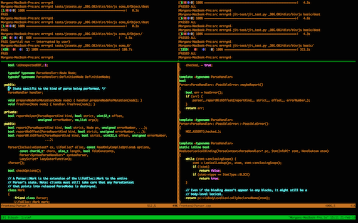
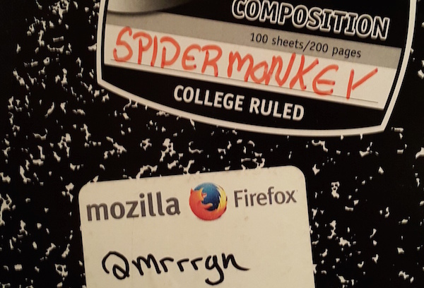
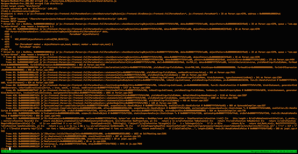
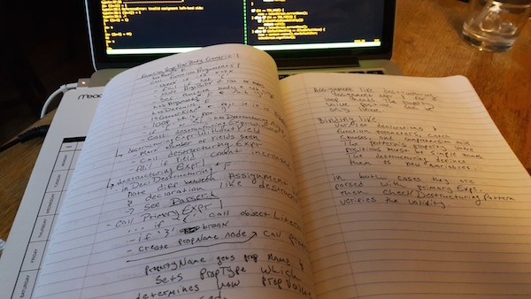
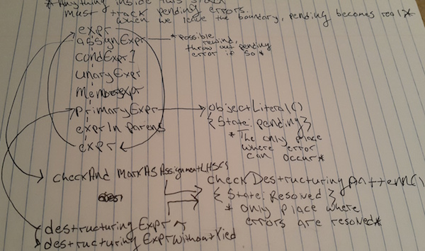

WEST OF Parser.cpp
This is an open field west of a lexer, with a boarded front door. There is a small mailbox here. A rubber mat saying 'Welcome to SpiderMonkey!' lies by the door.
lookThe complex call-graphs of a massive project put us in a similar situation. When navigating source, whether because some functions are imported from many separate files, or a class is defined at line 50 then first instantiated at line 5000, grasping a section of code can become very taxing on our short-term memory. I mitigate this somewhat by using screen splitting and high-resolution monitors, but this can only take me so far.

[ My most recent terminal session. ]
Any veteran text-based gamer can tell you that the key to mastering a one dimensional universe is to translate it into two [dimensions]. To do that, simply sketch out the results of your moves on a piece of paper. By the end of a game you should have constructed a fairly detailed map. Navigating the world becomes easy.
Likewise, when, after some time of plugging away at manageable SpiderMonkey patches, I tackled a bug large enough to best tmux, vim, and my short-term memory. I went straight for my notebook.

// Code Cartography
My quest: "Bug 932080 - Support default values in destructuring" was to put the finishing touches on a longstanding es6 feature. Namely to allow for syntax like:
// default object values in function arguments
function f({x=1, y=2}) { return x + y; };
f({}) == 3;
f({x: 12}) === 14;
// standalone
({x=1, y=2} = {y=99});
y === 99,
x === 1;
Among other things, this modest feature is going to obsolesce the millions of KLOCs spent setting default arguments using objects (a common pattern). How exciting!
The change is quite subtle when compared to something like
| function f({x: x=1}){} |, which we already support. So why has it been painful to implement? Well, the | {foo=bar} | syntax is a special case (called a "Cover Grammar"), and this one is only valid during destructuring. This complicates life because sometimes we don't even know if we are destructuring until after we've completely parsed an expression.Take
| ({foo=bar}) => foo; | for example. | ({foo=bar}) | is first parsed as an object literal and is therefor a SyntaxError, however, upon encountering | => | we rewind the parser and reparse the expression as function arguments. Conceptually this may seem simple, but we had no good mechanism for ignoring the false error in the parser. This increased the bug's scope substantially.What we needed was some way to defer errors and potentially void them. The most important task then became locating the places where one of these deferred errors could be either thrown out or acted upon. In other words, to draw a border around some chunk of the parser, where any incoming call must pass in an "error-stashing" object. Inside of the boundary errors are stashed and un-stashed [via the object] catch-as-catch-can, and upon subsequent border crossings any errors are acted upon.
/* Here we cross the "possible-error" boundary, expr will call many other functions, passing &possibleError to each one. When an error is seen, possibleError is set to pending. When something happens to reverse the error (like realizing we're in an arrow function) we unset it. At the end we report any still-pending error. */
PossibleError possibleError;
expr(..., &possibleError);
possibleError.maybeReport();
A long-time JS Engine hacker would probably have an intuitive grasp of where this boundary lies, but I had literally no clue. To save time I decided to interrogate the engine directly by setting a breakpoint against every parser method with the word "destructuring" in it and generate some backtraces.

At this point, I exited the debugger and began working my way bottom-up through the backtrace -- taking notes about everything happening in plain English.

From that initial backtrace (with the aid of ctags for quick navigation) I was able to create a sort of playbook which covered not just the initial case, but also every other code path related to destructuring. Writing it in plain English was especially useful for increasing my high level understanding of the source. By the end of the exercise it read like the sort of explanation I've often seen coming from veteran hackers on IRC.
Finally, by putting it all together, I had a map of the boundary. Win!

With that information I was able to create this WIP, and bring us [hopefully] not far from never needing to write boilerplate like
| arg = obj.prop || "default value"; | again. :)Could I have done the same without writing it out by hand? Yes, but experience tells me it would have gone more slowly. Longhand is simple to edit, draw diagrams on, and helps jog my brain. That said, any external notes are better than nothing! Without them, I'd need to rely on building up the same structured information in my long term memory (likely by reading and re-reading the same sections of code many times over). Nobody has time for that.